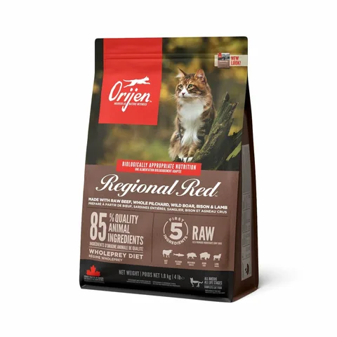

ORIJEN
ORIJEN Regional Red
乾飼料・無穀・紅肉配方・1.8kg／5.4kg 袋
單次購買最低（不需訂閱）：Medpets 1x1.8kg €22.83/kg
比歷史低價高 63%
90 天價格水準：偏高（最低 €13.58/kg ～ 最高 €22.19/kg，依過去 18 天每日最低價）
商店報價（依每單位價排序）
| 店家 | 規格 | 總價 | 每單位價 | 條件 | 購買 |
|---|---|---|---|---|---|
| Medpets | 1x1.8kg | €39.95 | €22.19/kg | 滿 €69 免運・運費 €4.95・最低訂單 €14.95 需訂閱定期配送 2026-11-27 live browser：Regional Red 1.8kg €42.50 一次價／Herhaal €39.95，價格不變，有貨，仍為最佳價；免運 €69。 | 前往 → |
| Petgamma | 1x5.4kg | €73.33 | €13.58/kg | 運費見 Petgamma；ShopBuddies 5% 經 ShopBuddies 返現 €3.16 沿用 2026-11-07 報價 | 前往 → |
| Amazon.nl（賣家 Plein） | 1x5.4kg | €76.92 | €14.24/kg | 免運 經 CashbackXL 返現 €5.08 沿用 2026-11-07 報價 | 前往 → |
| Huisdieren.nl | 1x5.4kg | €80.49 | €14.91/kg | 滿 €59 免運・運費 €6.95 沿用 2026-11-07 報價 只剩 4 包 | 前往 → |
| Petgamma | 1x1.8kg | €39.26 | €21.81/kg | 滿 €50 免運 經 ShopBuddies 返現 €1.69 沿用 2026-11-07 報價 | 前往 → |
| Pharmapets | 1x1.8kg | €39.59 | €21.99/kg | 滿 €39 免運・運費 €3.99 沿用 2026-11-07 報價 | 前往 → |
| Brekz | 2x5.4kg | €150.98 | €13.98/kg | 滿 €35 免運 沿用 2026-11-15 報價 未核實 2026-11-15 curl 重抓頁面，確認頁面仍含上次價格字串（未逐變體結構化解析、庫存／運費／促銷沿用 11-13）；價格視為同 11-13；返現率沿用（ShopBuddies zooplus 1.33%/新客8%、Medpets 4%、Brekz 3.5%、YesCashback bestpetfoods 4% 今日重查未變；CashbackXL 頁為 JS 未能讀取＝未確認） | 前往 → |
| bestpetfoods | 1x5.4kg | €75.95 | €14.06/kg | €50 起免運，否則 €5.95；定期配送 95 折不計返現 沿用 2026-11-15 報價 未核實 2026-11-15 curl 重抓頁面，確認頁面仍含上次價格字串（未逐變體結構化解析、庫存／運費／促銷沿用 11-13）；價格視為同 11-13；返現率沿用（ShopBuddies zooplus 1.33%/新客8%、Medpets 4%、Brekz 3.5%、YesCashback bestpetfoods 4% 今日重查未變；CashbackXL 頁為 JS 未能讀取＝未確認） | 前往 → |
| Brekz | 1x5.4kg | €75.99 | €14.07/kg | 滿 €35 免運 沿用 2026-11-15 報價 未核實 2026-11-15 curl 重抓頁面，確認頁面仍含上次價格字串（未逐變體結構化解析、庫存／運費／促銷沿用 11-13）；價格視為同 11-13；返現率沿用（ShopBuddies zooplus 1.33%/新客8%、Medpets 4%、Brekz 3.5%、YesCashback bestpetfoods 4% 今日重查未變；CashbackXL 頁為 JS 未能讀取＝未確認） | 前往 → |
| Petfooddiscount.nl | 1x5.4kg | €81.95 | €15.18/kg | 運費 €4.95 沿用 2026-11-15 報價 未核實 2026-11-15 curl 重抓頁面，確認頁面仍含上次價格字串（未逐變體結構化解析、庫存／運費／促銷沿用 11-13）；價格視為同 11-13；返現率沿用（ShopBuddies zooplus 1.33%/新客8%、Medpets 4%、Brekz 3.5%、YesCashback bestpetfoods 4% 今日重查未變；CashbackXL 頁為 JS 未能讀取＝未確認） | 前往 → |
| Zoofera | 1x5.4kg | €89.78 | €16.63/kg | 免運 沿用 2026-11-15 報價 未核實 2026-11-15 curl 重抓頁面，確認頁面仍含上次價格字串（未逐變體結構化解析、庫存／運費／促銷沿用 11-13）；價格視為同 11-13；返現率沿用（ShopBuddies zooplus 1.33%/新客8%、Medpets 4%、Brekz 3.5%、YesCashback bestpetfoods 4% 今日重查未變；CashbackXL 頁為 JS 未能讀取＝未確認） | 前往 → |
| PetShop24 | 1x5.4kg | €96.95 | €17.95/kg | 滿 €55 免運・運費 €5.75 沿用 2026-11-15 報價 未核實 2026-11-15 curl 重抓頁面，確認頁面仍含上次價格字串（未逐變體結構化解析、庫存／運費／促銷沿用 11-13）；價格視為同 11-13；返現率沿用（ShopBuddies zooplus 1.33%/新客8%、Medpets 4%、Brekz 3.5%、YesCashback bestpetfoods 4% 今日重查未變；CashbackXL 頁為 JS 未能讀取＝未確認） | 前往 → |
| Brekz | 1x1.8kg | €42.89 | €23.83/kg | 滿 €35 免運 沿用 2026-11-15 報價 未核實 2026-11-15 curl 重抓頁面，確認頁面仍含上次價格字串（未逐變體結構化解析、庫存／運費／促銷沿用 11-13）；價格視為同 11-13；返現率沿用（ShopBuddies zooplus 1.33%/新客8%、Medpets 4%、Brekz 3.5%、YesCashback bestpetfoods 4% 今日重查未變；CashbackXL 頁為 JS 未能讀取＝未確認） | 前往 → |
| Zoofera | 1x1.8kg | €43.21 | €24.01/kg | 免運 沿用 2026-11-15 報價 未核實 2026-11-15 curl 重抓頁面，確認頁面仍含上次價格字串（未逐變體結構化解析、庫存／運費／促銷沿用 11-13）；價格視為同 11-13；返現率沿用（ShopBuddies zooplus 1.33%/新客8%、Medpets 4%、Brekz 3.5%、YesCashback bestpetfoods 4% 今日重查未變；CashbackXL 頁為 JS 未能讀取＝未確認） | 前往 → |
| Petfooddiscount.nl | 1x1.8kg | €43.95 | €24.42/kg | 運費 €4.95 沿用 2026-11-15 報價 未核實 2026-11-15 curl 重抓頁面，確認頁面仍含上次價格字串（未逐變體結構化解析、庫存／運費／促銷沿用 11-13）；價格視為同 11-13；返現率沿用（ShopBuddies zooplus 1.33%/新客8%、Medpets 4%、Brekz 3.5%、YesCashback bestpetfoods 4% 今日重查未變；CashbackXL 頁為 JS 未能讀取＝未確認） | 前往 → |